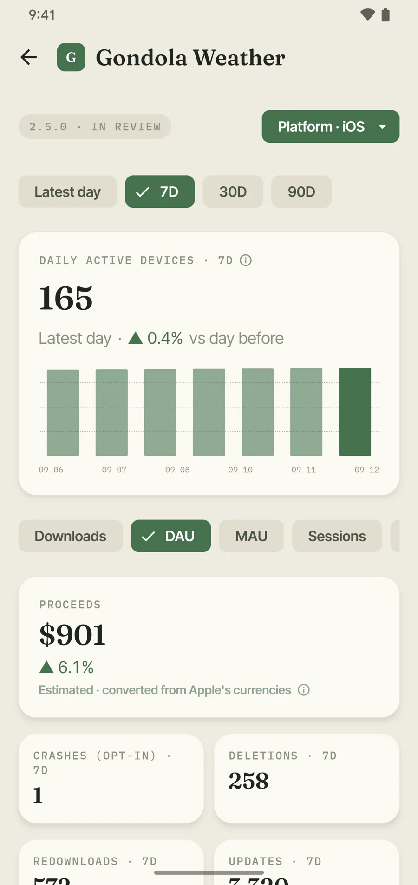

01 — App analytics
Downloads, active devices, sessions, crashes.
Pick a platform and a range — latest day, 7, 30 or 90 days — and every metric re-charts against it. Crashes and session counts come from the users who agreed to share analytics with developers, and PomoStats labels them that way.
- Downloads, redownloads, updates and deletions
- Daily and monthly active devices
- Sessions and opt-in crash counts
- Impressions, product page views and conversion rate
